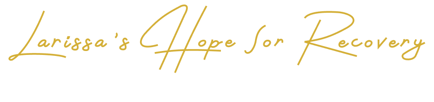

At Larissa’s Hope for Recovery, we are dedicated to empowering individuals and families across the Greater Los Angeles Area through compassionate, trauma-informed care. Specializing in Life Coaching and Addiction Recovery, our services include Alcohol and Other Drug (AOD) Education, Codependency Support, Self-Esteem Empowerment, Domestic Violence Recovery, Family Cycle Awareness and Healing, and Grief Counseling. We create personalized pathways to healing, helping clients break free from destructive cycles, rebuild confidence, and rediscover hope. At Larissa’s Hope for Recovery, we believe that lasting change is possible with the right support, understanding, and tools to thrive.
The journey toward healing begins with understanding. At Larissa’s Hope for Recovery, we offer trauma-informed, compassionate life coaching for individuals seeking meaningful transformation, emotional restoration, and personal empowerment. Located in Los Angeles County & Surrounding Counties, our practice is built on the fundamental belief that true change emerges through awareness of one’s experiences, behavioral patterns, and untapped potential. We provide structured guidance across key areas, including trauma recovery, substance use education, codependency, self-esteem development, and grief counseling. Each client’s path is approached with sensitivity and care, ensuring that support is both personalized and impactful. We are committed to helping individuals move forward with clarity, strength, and dignity. We have 15 years of experience helping individuals and building healthier relationships.
We approach healing at the root. Our trauma-informed coaching acknowledges the lasting effects of emotional wounds and offers sensitive, customized strategies to help clients rebuild from within with safety, compassion, and dignity.
Learn MoreThrough alcohol and other drug (AOD) education, we provide structured guidance and real-world insights that equip clients with the awareness and resources necessary to understand substance use, prevent relapses, and support recovery journeys with clarity, perfection, and purpose.
Learn MoreWe help individuals untangle from unhealthy relationship dynamics by teaching boundary-setting, emotional independence, and the development of nurturing, reciprocal connections built on trust, self-awareness, resilience, and long-term emotional well-being rooted in compassion, growth, and sustainable personal change.
Learn MoreWith self-esteem empowerment, we guide clients in cultivating confidence, embracing authenticity, and stepping into their full potential with courage, clarity, and conviction, fostering personal growth, resilience, and lasting inner transformation.
Learn MoreHealing from abuse requires trust, safety, and strength. Through our domestic violence recovery service, we assist survivors in navigating their emotional journeys, developing safety plans, and regaining autonomy and self-worth through compassionate support, tailored strategies, and long-term recovery-focused guidance.
Learn MoreOur family cycle awareness and healing service explores generational patterns to uncover inherited behaviors and beliefs, working to restore healthy communication and emotional balance within family systems while fostering understanding, breaking harmful cycles, and promoting lasting relational harmony.
Learn MoreOur grief counseling service recognizes that loss changes us, but healing is possible. We offer a safe, supportive space to process grief, honor memories, and begin a new chapter of emotional restoration with compassion, patience, personalized care, and ongoing emotional support.
Learn MoreLarissa’s Hope for Recovery is proud to support individuals across Los Angeles County & Surrounding Counties, and surrounding areas with personalized life coaching rooted in empathy, resilience, and transformation. With a focus on trauma-informed practices, emotional awareness, and empowerment, we serve as a dedicated partner on your path to healing. Every session is a step toward clarity, balance, and lasting change built around your pace, your voice, and your vision for the future.